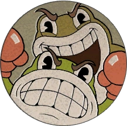
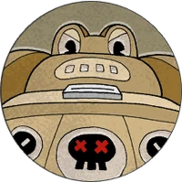

Ribby and Croaks
Ribby and Croaks are a boss duo in Cuphead. They are fought and encountered in the level Clip Joint Calamity on Inkwell Isle One. Although they are separate during the first two phases of the fight, they still share the same health pool.
Appearance
The duo seem to be wood frogs, but Croaks is a brown frog with a light salmon underside and he wears a maroon belt, brown boxing gloves and red pants/leggings. Ribby is a green frog who is shorter than Croaks, and has a yellowish white underside. He wears red boxing gloves, a red belt and white pants/leggings.
Battle
Intro
Before the battle, Croaks makes a taunt followed by Ribby, who snarls at Cuphead and Mugman with shaky legs.
Phase 1
 "We've had fightin' souls since we've been tiny tadpoles."
"We've had fightin' souls since we've been tiny tadpoles."
—Ribby and Croaks, Phase 1 Death Screen
In the first phase, the two frogs take turns attacking the players in a set pattern that is easily
memorized and avoided:
- Croaks will spit out fireflies, which are literally on fire, that will slowly inch closer to damage
the
players. These bugs are easily disposable by simply shooting at them. Because of this, Croaks' attack is
much easier to avoid than Ribby's. Hitpoints = 4/4/4
- Ribby throws fist shaped energy waves at the player in a set pattern, some of which can be parried:
one
close to the ground, one slightly higher off the ground and one high off the ground. The pattern
reverses after the third energy fist. The entire pattern (including the reversion) is shot twice. In
Simple and Expert mode, however, the pattern is shot once, with decreased speed in Simple mode, and
increased speed in Expert mode.
In Expert mode, both Ribby and Croaks do their attacks in unison, rather than individually.
Phase 2

"Crude and bad, 'cause we're from the wrong side of the lily pad."
—Ribby and Croaks, Phase 2 Death Screen
In this phase, players are now surrounded by Ribby and Croaks in a pincer attack, with Ribby on the left
and Croaks on the right. They will now attack simultaneously, although Croaks' attack is a little bit
longer than Ribby's.
Ribby will periodically slap three ringed ball-like projectiles bouncing up and down, while Croaks will
spin his body rapidly like a fan, blowing the players away from him and towards Ribby's attack in order
to damage them. In Expert mode, the ringed balls bounce faster, and Croaks blows the players away with
more force. Ribby's attack can be avoided by running away from it as it bounces, dashing or
smoke-dashing away, even while being blown away.
In Simple and Expert mode, Ribby will be throwing energy waves like in the first phase after rolling.
However, the pattern doesn't reverse after the third energy fist like it does in the first phase.
Instead, it simply ends. He will then alternate between throwing energy wave punches and slapping ringed
balls, of which he can also choose to slap either once, twice or thrice.
Ribby and Croaks working together by combining attacks.
After taking enough damage, Croaks will open his mouth and Ribby will attempt to damage the players
again by rolling at Croaks. After that, Ribby will then roll into Croaks' mouth, making Croaks swallow
Ribby and causing Croaks to transform into a slot machine. This commences the final phase of the battle.
In Simple mode, the battle will simply end with Croaks pounding his fists to the floor, and Ribby
crying. Hitpoints = 854/714/741
Phase 3

"You went for broke and now you're croaked!"
—Ribby and Croaks, Phase 3 Death Screen
In this phase, the giant slot machine is initially invulnerable and will spew coins continually. In
expert mode, coins are fired more frequently.
A slot machine formed by Ribby and Croaks fusing.
By triggering the crank via a parry (which does not count toward the parry total), the machine will turn
vulnerable and cycle through different symbol patterns to indicate its impending attack. It will open a
giant metal hatch in its bottom half which shoots out moving platforms with various properties, all of
them have spikes on the side and deal contact damage, the spawn rate will slowly increases as well.
There are three possible set of chip platforms that can be spawned:
Tiger: Orange chips that make orange balls bouncing up and down out of the center, which must be jumped
over or went under to not get hit. The bounces are always in a pattern, even if the chips start to spawn
faster.
Snake: Green chips that need to be jumped on continuously to not get hit by the side, the speed of the
chips keeps accelerating.
Bull: Red chips that float in the middle of the screen before shooting fire jets in an indicated
direction.
In Expert mode, all the platforms spawn and move faster.
When sufficient damage has been dealt to the slot machine, it malfunctions and and violently rumbles,
with skull icons on its body and crossed out eyes. Hitpoints = 578/665
Credits for information and images: Cuphead Fandom Wiki